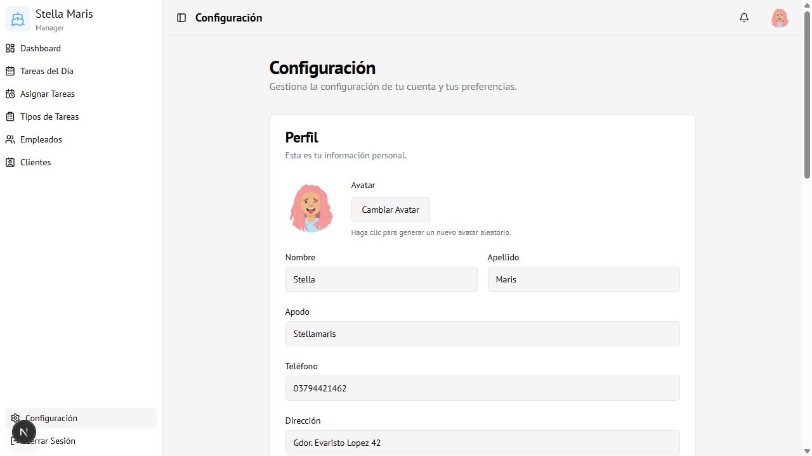

Módulo 08
Configuración
Pantalla de perfil y preferencias personales. Accesible para todos los usuarios.
Vista general

Sección: Perfil
Muestra y permite editar los datos personales del usuario logueado.
| Campo | Descripción |
|---|---|
| Avatar | Imagen de perfil generada automáticamente. Clic en "Cambiar Avatar" para obtener un nuevo avatar aleatorio |
| Nombre | Nombre del usuario |
| Apellido | Apellido del usuario |
| Apodo | Nombre corto para uso interno |
| Teléfono | Número de contacto |
| Dirección | Domicilio |
Para guardar los cambios del perfil: hacer clic en Guardar Perfil.
Sección: Cambiar Contraseña
Permite actualizar la contraseña de acceso al sistema.
| Campo | Descripción |
|---|---|
| Contraseña actual | La contraseña con la que ingresaste |
| Nueva contraseña | La nueva contraseña deseada |
| Confirmar contraseña | Repetir la nueva contraseña |
Para aplicar el cambio: hacer clic en Cambiar Contraseña.
Recomendación: Los empleados nuevos deben cambiar su contraseña inicial (que es NombreDNI) en esta sección.
Cerrar Sesión
Desde cualquier pantalla se puede cerrar sesión de dos formas:
- Barra lateral izquierda → botón Cerrar Sesión (al pie del menú)
- Avatar superior derecho → menú desplegable → Cerrar Sesión
Al cerrar sesión se vuelve a la pantalla de login.
Acceso
Visible para todos los usuarios autenticados.
Ruta:
Ruta:
/settings